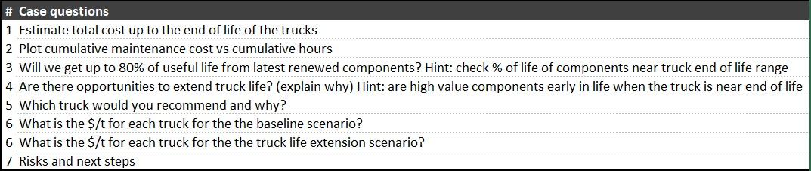
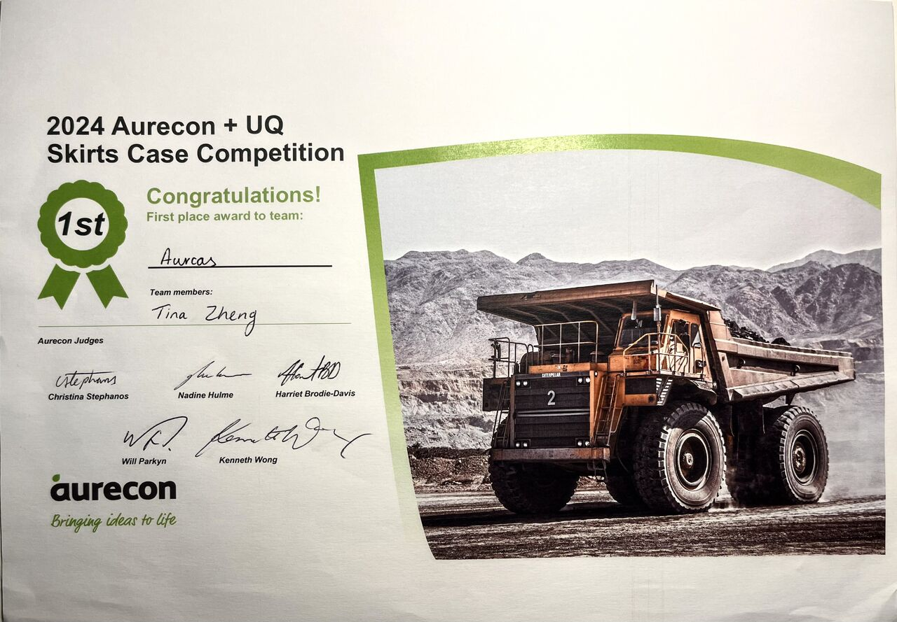
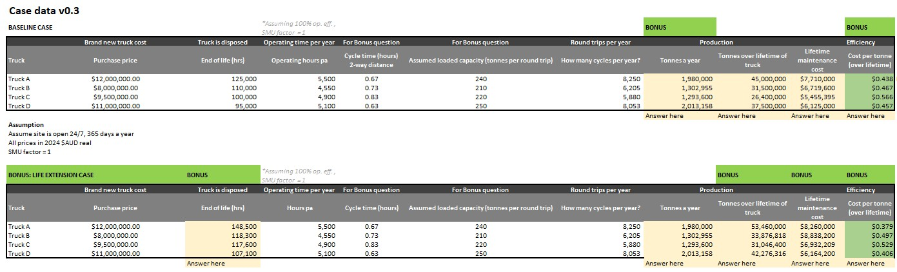
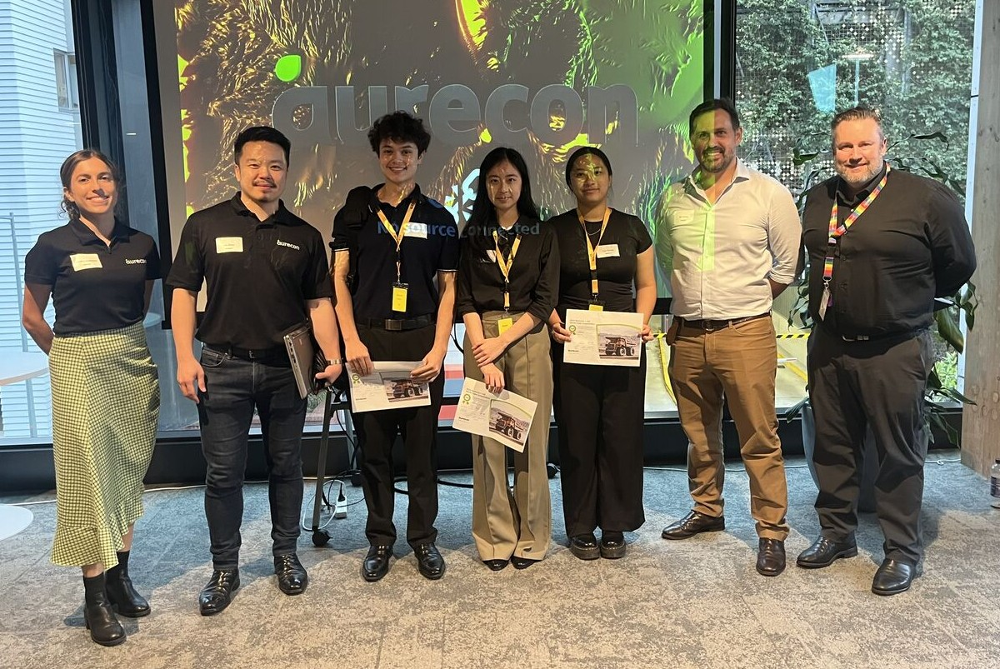
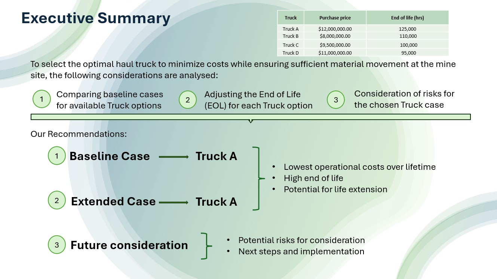
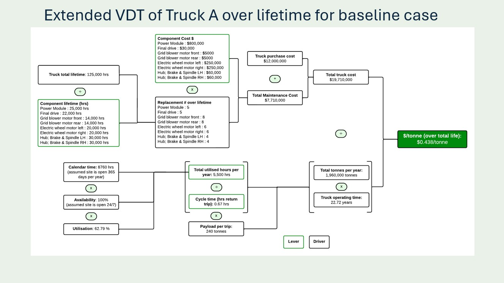
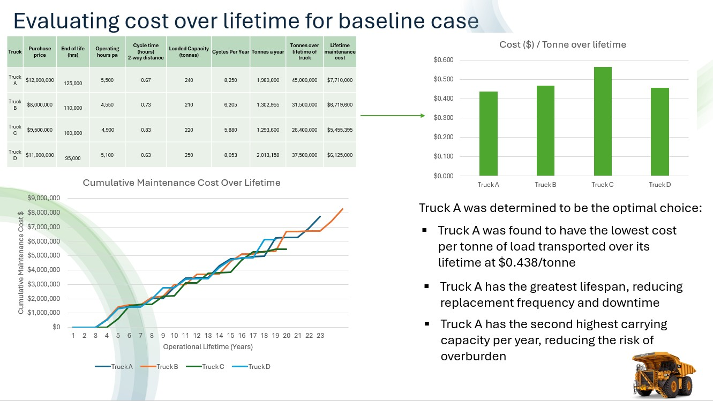
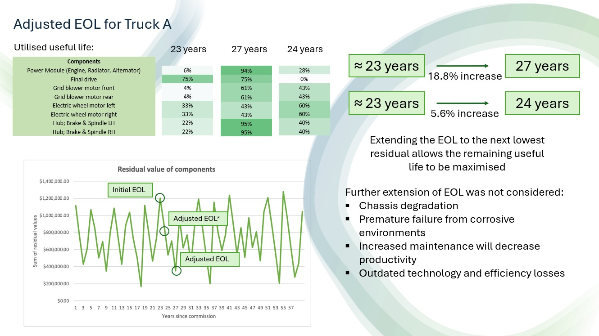
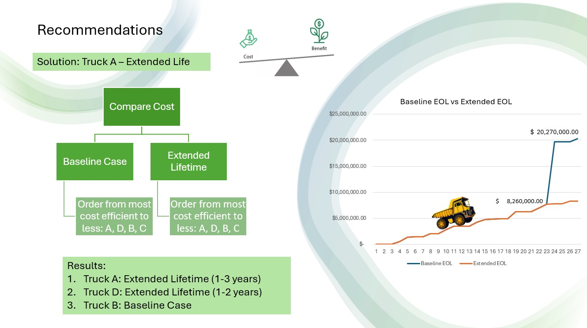
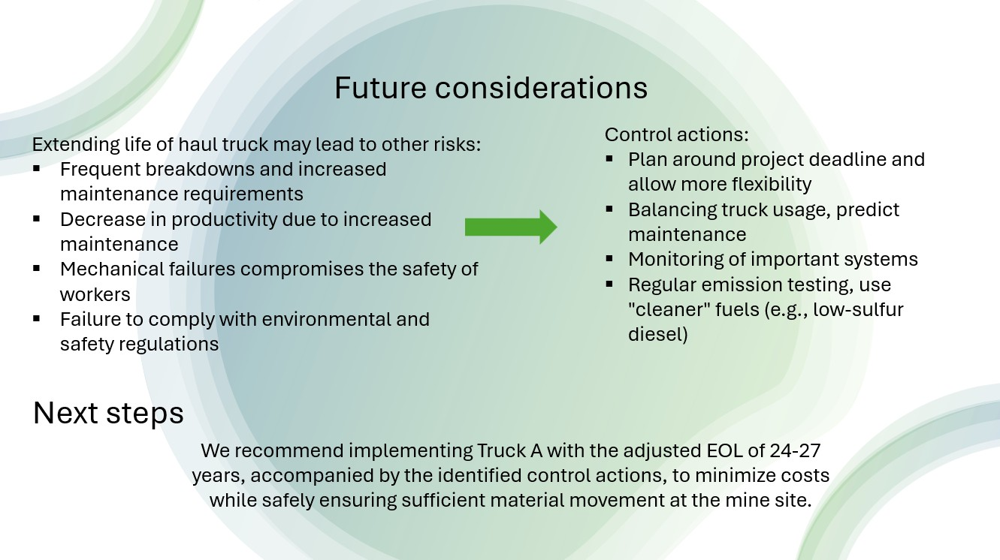

Engineering Project Portfolio
Tina (Shuting) Zheng
A small collection of my favourite projects as a final-year BE/ME Mechatronics student at UQ
Aurecon Case Study Competition
Aurecon, Brisbane
Duration: July 2024 - September 2024
Key skills: Excel • Risk Analysis • Asset Management • Techno-Economic Analysis
I participated in the 2024 Aurecon Case Study Competition held by Aurecon and UQ Skirts with my team, team Aurcas🐋, where our analysis achieved first place. The task an asset management project aimed at minimising the total cost per tonne of transported material for four provided candidate haul trucks, allowing us to gain experience in techno-economic analyses within asset management practices. Our findings from our spreadsheet analysis were collated in a slide deck, which we presented to a panel of Aurecon engineers at the Finals.


Our approach to this challenge included:
- Evaluating baseline costs of each truck by comparing upfront costs, maintenance expenses, and productivity data
- Investigating end-of-life adjustments to minimise inefficient maintenance costs and improve the baseline case
- Identifying risks that accompany our solution, and recommending appropriate control measures

The competition enabled us to gain experiences within asset management that we have not been introduced to in university coursework,
such as creating value driver trees, and maximising utilised useful life of components by analysing residual values.
Beyond the technical insights, presenting our findings to the Aurecon panel and receiving their constructive feedback gave us a glimpse into the standard of
presentations and decision-making required in the industry.

Slide Deck





